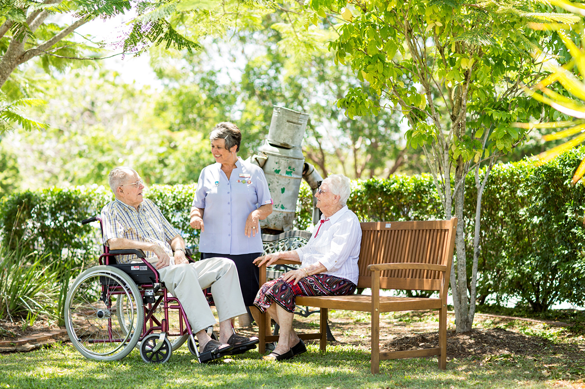
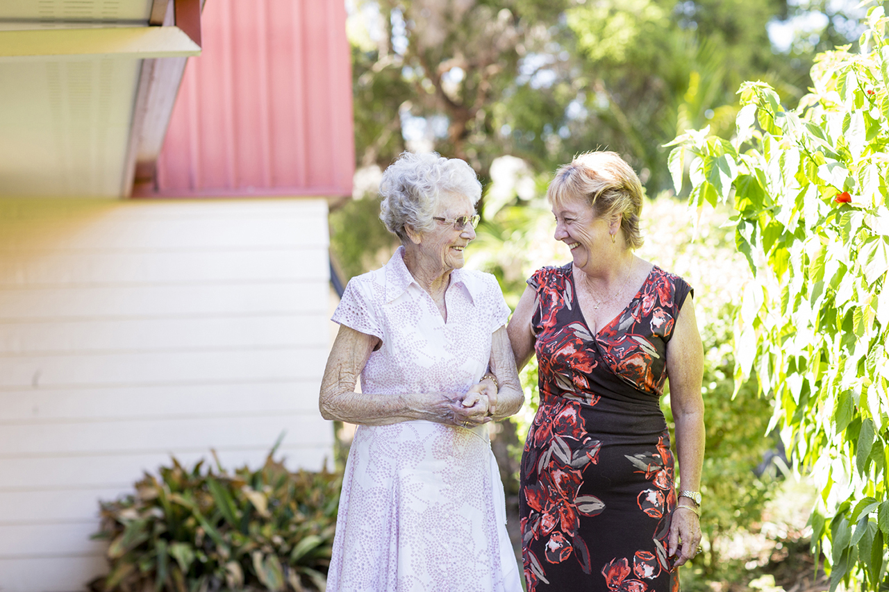
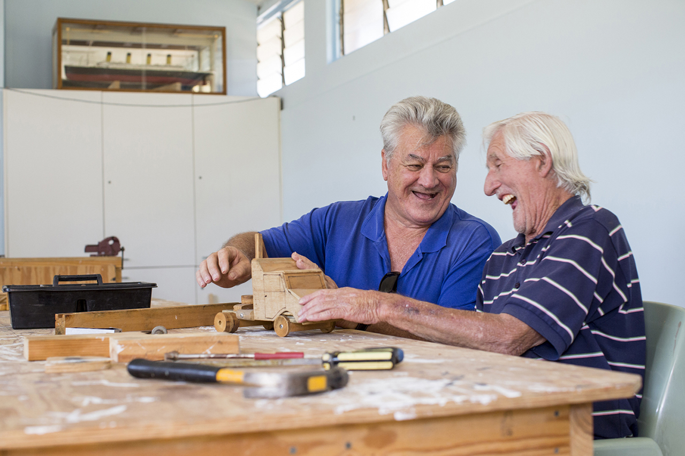

About Riverview Gardens
Riverview Gardens Aged Care Plus Centre is a vibrant aged care centre originally built in 1989 and later refurbished in 1997 and 2009.
Located in Ipswich it has easy access to local shops and amenities.
Key Features
- Fully accredited and government approved aged care centre
- Offering all levels of care including respite care and secure dementia care
- Single rooms, most with ensuite
- Emergency call system in all rooms
- 24 hour access to compassionate care and nursing staff
- Freshly prepared meals cooked in house by our professional catering team
- Range of personalised lifestyle and wellbeing services
- Maintained gardens and vegetable patch
- Access to Chaplain for spiritual and emotional wellbeing
- Regular Chapel services for various faiths

“I welcome you to join us at Riverview Gardens Aged Care Plus Centre and explore our lovely grounds. Meet our wonderful team and experience the care and community provided in our Centre.”
Darryl Tocchetti, Centre Manager
Suites
The single rooms at Riverview Gardens Aged Care Plus Centre have been designed with residents’ comfort and security in mind. All rooms are fully furnished and have a telephone connection and television connection.
For added peace of mind all rooms at Riverview Aged Care Plus Centre have 24 hour emergency call systems.
Lifestyle and wellbeing
Riverview Gardens Aged Care Plus Centre has a team of onsite specialists and compassionate care and nursing staff, available 24 hours a day.
We offer a busy social calendar with a range of lifestyle and leisure activities for residents to enjoy. Attendance at any activity is at the discretion of the resident and we hope to offer enough choice that our lifestyle program will appeal to a wide range of tastes.
Throughout the year we also arrange a number of shows for residents’ entertainment.
Dining experience
Meal times are an important aspect of our culture. The creation of a meal and sharing it with others has significant social benefits. We encourage all our residents to share meal times but we’re happy to accommodate residents who are unable or would prefer to eat in their rooms.
All meals at Riverview Gardens Aged Care Plus Centre are freshly prepared onsite by our professional catering team. Our menus are changed seasonally and offer residents plenty of choice, with a variety of fresh and tasty meals to choose from.
We are able to cater for special dietary requirements and happily accommodate individual likes and dislikes.
What makes us different?
Spiritual support
Pastoral care is an integral part of the services we provide. In creating and celebrating our vibrant Christian community, our goal is to bring daily purpose, quality and meaning to life for everyone who lives at Riverview Gardens Aged Care Plus Centre.
Our Salvation Army Chaplain is available to residents 24 hours a day.
Family engagement
We encourage family members to remain an active part of residents’ lives and we welcome friends and family members at any time.
To ensure family members remain informed we hold regular family meetings. The Centre Manager is also available should you have any questions or concerns.
Meet our management team
Riverview Gardens Aged Care Plus Centre is led by our Centre Manager. Together with our Chaplain and Care Manager we ensure every resident receives a high standard of care that meets their physical, emotional and spiritual needs.
How to enter Riverview Gardens Aged Care Plus Centre
You will need a My Aged Care client record and an aged care assessment to enter in to any aged care centre. Please call the government information line on 1800 200 422 to register with My Aged Care and receive a referral to Riverview Gardens Aged Care Plus Centre. Come and meet our care team and vibrant resident community.
Tours at Riverview Gardens Aged Care Plus Centre can be arranged at a convenient time during the week. To schedule a private tour please call 07 3282 1000 or email acp.enquiries@aue.salvationarmy.org